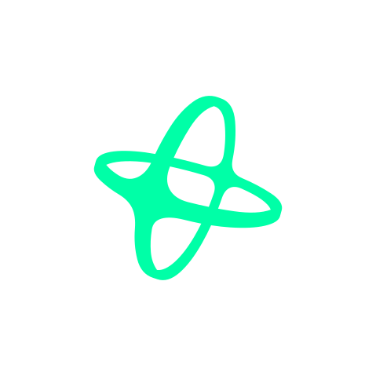

Winner Bot Prize
$1,000for top hackathon bot

NANSEN X COMMUNITY最終提出 final submissions登録完了41人のうち、提出まで到達した9人
Winner Bot Prize
$1,000for top hackathon bot
登録完了
41 人Bot稼働
24 人CLI連携
10 人提出
9 人登録完了からBot稼働、CLI連携、提出へ進み、$1,000賞金審査の対象になるまでの到達プロセス。下の一覧では9作品の役割、Nansen活用、公開導線を確認できます。
README、デモ、公開リンクから整理した提出作品のショーケース。目的別に見比べ、 次に試すBotを探せます。
Nansen API の使い方、ユーザー場面、実利用フローを作品ごとに確認できます。
9件を表示中
NANSEN BOT NAVIGATOR
やりたいこと、チェーン、Bot名から9つのBotを絞り込めます。
一致する提出作品がありません。検索語を調整してください。
監視・分析
Solanaミーム監視・分析ダッシュボード型
BUY速報からSmart Money根拠、公開ダッシュボードでの追跡判断までを短くつなぐSolanaミーム監視Bot。
監視・分析
Solanaミーム監視・分析ダッシュボード型
Solanaミームは動きが速く、気づいた時にはBUYが走った後になりやすい。moltbotは通知と公開ダッシュボードで、根拠確認と追跡判断までを短くするBotです。
急なBUY通知を起点に、Smart Moneyの根拠と公開ダッシュボード上の追跡優先度を一気に確認するためのBotです。
通知で変化を受け取る
BUY速報、Smart Money監視、時系列ダイジェストで、今見るべきSolanaミーム候補を把握します。
根拠を確認する
smart-money/dex-trades、Token Screener、token analysis由来の変化を候補ごとに確認します。
ダッシュボードで追う
公開ダッシュボードで群衆ブレイクやwhale BUY候補を見比べ、追跡優先度を決めます。
Python · Discord Bot · Nansen API · Helius webhook · DexScreener · GitHub Pages
低コスト初動検知
低時価総額トークン初動検知
DEXScreenerなどで候補を絞り、Nansen CLI確認済みのSolana低時価総額トークンだけ通知するBot。
低コスト初動検知
低時価総額トークン初動検知
Solanaの低時価総額候補は数が多く、全部を手で追うとノイズが重い。alpha hunter bot は DEXScreener、RugCheck、GeckoTerminal で候補を絞り、Nansen CLIでSmart Money反応を確認する。調査すべき候補だけをDiscord通知で受け取りたい時に使う。
無料/低コストな外部スクリーニングで候補を絞り、Nansen CLI確認に進めるトークンだけを選ぶためのBotです。
候補通知を受け取る
4層フィルタを通ったSolana低時価総額候補をDiscordで確認する。
Nansen CLI確認を見る
token screener、smart-money netflow、holders、who-bought-soldの確認結果で候補の強さを読む。
追う候補を選ぶ
AlertとWatchlistの違いを見て、詳細調査する対象を決める。
Discord Bot · Nansen CLI · DEXScreener · RugCheck · GeckoTerminal
コミュニティ参加導線
おみくじ型トークン発見
「おみくじ」投稿で運勢とラッキートークンを返し、Nansen由来の温度感も会話に混ぜるBot。
コミュニティ参加導線
おみくじ型トークン発見
分析ツールを開くほどではないけれど、話題のトークンが少し気になる。Discordで「おみくじ」と送るだけで、運勢、ラッキートークン、Nansen AIラベル予想、スマートマネー温度計、流動性、時価総額の温度感を読める。コミュニティの会話を止めずに、遊びの入口からトークン文脈へ触れたい時に使う。
重い分析画面を開かず、コミュニティの遊びからトークンの温度感と話題化のきっかけを作るためのBotです。
おみくじを送る
Discordで「おみくじ」と送り、運勢とラッキートークンを受け取る。
温度感を見る
Nansen由来のAIラベル予想、スマートマネー温度計、流動性、時価総額、Volume/MCAP比率を見る。
話題にするか決める
遊びの結果を会話のきっかけにし、深掘りするか見送るかを選ぶ。
Discord Bot · Nansen API · token-screener · Community engagement
ウォレット追跡
BSC大口wallet日次監視
BSCの独自rien-SMとNansen Smart Moneyを日次で並べ、新規買いと保有集中を読むBot。
ウォレット追跡
BSC大口wallet日次監視
BSCのpumpは、気づいた時には先に仕込まれた後になりやすい。bb-nansenbot は Nansen Smart Money と独自rien-SMを並べ、日次レポートで新規買い、保有集中、TOP層の動きを見る。話題のtokenが出た時に、rien-SMが先に入っているかを確認したい時に使う。
BSCで先に入ったSmart Money群を日次で見つけ、pump前の仕込み候補かどうかを確認するためのBotです。
日次レポートを見る
Nansen-SM上位、rien-SM保有、rien-SM新規買いをまとめて確認する。
個別tokenを確認する
/token-checkerで話題のsymbolやcontract addressを見て、買い手と保有集中を読む。
深掘りする
Deep表示でlabel別net flowや経験別内訳を見て、追跡するか見送るか判断する。
Discord Bot · Nansen API · BSC · Daily batch · Wallet cohort analysis
Smart Moneyアラート
Smart Money買い集めアラート
Smart MoneyのDEX取引を監視し、複数ウォレットの買い集めをAlpha Scoreで通知するBot。
Smart Moneyアラート
Smart Money買い集めアラート
Smart Money の買い集めは、単発の取引だけ見ても判断しにくい。AlphaCat は smart-money/dex-trades を定期確認し、複数ウォレットが同じアルトを買い始めた動きを Alpha Score で整理する。通知から DexScreener や X 検索へ進み、深掘りする候補を決めたい時に使う。
複数Smart Moneyの同時買いをスコア化し、通知から深掘り対象を素早く絞るためのBotです。
買い集め通知を見る
複数のSmart Moneyウォレットが同じアルトを買い始めた通知を受け取る。
重なりを確認する
Alpha Score、ユニークウォレット数、買い集め加速で候補の強さを読む。
詳細リンクへ進む
DexScreener や X 検索リンクから、追う候補をさらに確認する。
Node.js · Discord Bot · Nansen API · DexScreener · X search links · Persistent storage
低ノイズRadar
Solana初動銘柄Radar支援
Solana低cap候補を低ノイズに絞り、根拠、見送り理由、追跡結果まで残せるRadar Bot。
低ノイズRadar
Solana初動銘柄Radar支援
Solanaの低cap候補は数が多く、通知が増えるほど何を見るべきか分かりにくい。bb Native Alpha Radar は Nansen の netflow、DEX trades、Token Screener、holders、Flow Intelligence を使い、候補、根拠、見送り理由を同じ流れで扱う。CA拡散前の候補を少数に絞って追いたい時に使う。
Solana低capの大量候補を、Nansen根拠、見送り理由、通知後の結果まで含めて少数のRadar Callに絞るためのBotです。
Radarで候補を見る
低ノイズに絞られたSolana低cap候補と保存されたRadar Callを確認する。
Flow / Whyで根拠を見る
Smart Money netflow、DEX trade presence、holder concentration、Flow Intelligence biasを読む。
結果と見送り理由を振り返る
post-alert tracking、leaderboard、rejectionsで判断の結果を見直す。
Node.js >=22 · Discord Bot · Native Discord REST/Gateway · Nansen API · Nansen CLI · Solana · DexScreener · gmgn · Leaderboard
調査補助
リアクション駆動CA便乗判定
CA投稿へのリアクションからSmart Money指標とPolymarket文脈をまとめ、調査結果をEmbedで返すBot。
調査補助
リアクション駆動CA便乗判定
アルト部屋にCAが投下された時、別タブで調べる前に最低限の根拠を見たい。Tag-Along Lens は CA を検知して🔍リアクションを自動付与し、気になったメンバーがクリックすると Embed でSmart Money動向とPolymarket文脈を返す。🟢/🟡/🔴/⚪ の判定と理由、Nansen詳細ページへのリンクまで同じ流れで確認できる。
CA投稿を調査の入口に変え、クリックひとつでSmart Moneyとナラティブ文脈から便乗可否を判断するためのBotです。
CA投稿を検知する
メンバーがアルト部屋に投下したCAをBotが検知し、🔍リアクションを自動付与する。
🔍をクリックする
気になったメンバーがリアクションを押し、EmbedでSmart MoneyとPolymarketの文脈を見る。
判定とリンクを見る
🟢/🟡/🔴/⚪の判定理由を読み、Nansen詳細ページへのリンクから深掘りする。
Discord Bot · Nansen API · Polymarket · Reaction trigger
検出・検証
Solanaミーム検出とエアトレードPDCA
Solanaミーム候補を検出し、エアトレード結果とAuto-Tuningで検出基準を育てるBot。
検出・検証
Solanaミーム検出とエアトレードPDCA
Solanaミーム候補は見つけるだけでは、次の判断基準が育ちにくい。dd Signal Bot は Nansen CLI とDexScreenerで候補を絞り、Conviction、エアIN、Watchの反応と成績を同じ流れで追う。保存したwallet観測と後追いperformanceをSmart Wallet PDCAやAuto-Tuningに回し、どのシグナルが効いたのかを参加者と振り返りたい時に使う。
ミーム候補の発見で終わらせず、反応、paper pick、結果を残してシグナル精度を育てるためのBotです。
Alertカードを見る
Flow/MCap、trader count、holder risk、buyer/seller balanceを候補カードで確認する。
Conviction / エアIN / Watchを選ぶ
候補への反応を残し、paper pickとして検証対象を管理する。
成績を振り返る
/my、/leaderboard、/meme-recap、/meme-resultsで結果を見て、保存済み成績を次回Alert評価に活かす。
Node.js · TypeScript · Discord Bot · Nansen CLI · Solana · DexScreener · Paper trading · SQLite · optional PostgreSQL
分析カード
Solanaトークン分析とwatch支援
Solanaトークンを/checkのMCAP・流動性・リスクからWatch、deep、reviewまで追えるBot。
分析カード
Solanaトークン分析とwatch支援
Solanaトークンは、最初のカード確認からwatch、deep analysis、振り返りまで情報が散らばりやすい。しえすたんBot は CAやDexScreener URLから、時価総額、流動性、ホルダー数、Smart Money Flow、DEX売買、リスク注意点をToken Checkカードにまとめる。気になるtokenを一度見て終わりにせず、Watch Radar、/deep、/reviewで後から振り返りたい時に使う。
/checkで見たtokenをWatch、deep analysis、reviewまでつなぎ、単発確認を継続調査に変えるためのBotです。
/checkでカードを見る
CAやDexScreener URLから時価総額、流動性、ホルダー数、SM Flow、リスク注意点を見る。
Watchlistや/deepで追う
Watch Radar、deep analysis、flow、holders、DEX tradesで根拠を読み続ける。
/radarや/reviewで振り返る
Alpha Radar、Signal Review、Elite SMで候補と過去シグナルを見直す。
Node.js · Discord Bot · Nansen API · Nansen CLI · Solana · DexScreener · JSON storage